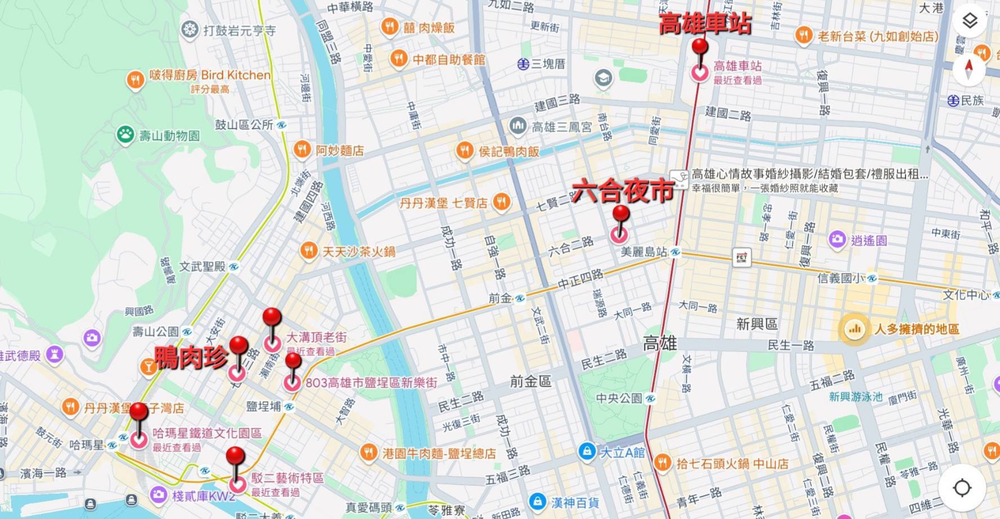
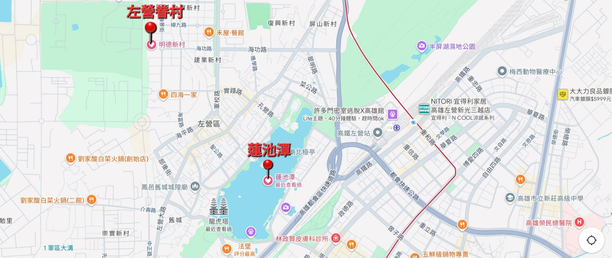
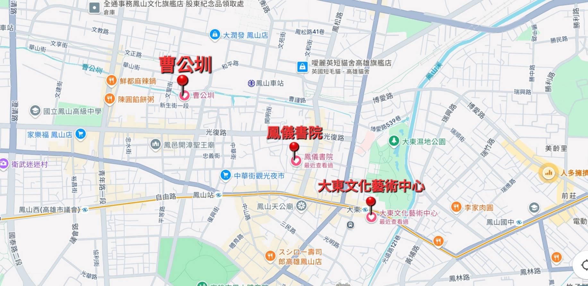

第六組行程規劃
.
Home
行程內容
第一天: 港都文學 X 鹽埕生活
第二天: 舊城記憶 X 城市邊界
路線規劃
小組成員
第六組路線規劃
探索高雄的歷史、文化與邊界 —— 兩天一夜的深度旅程
第一天：港都文學 × 鹽埕生活
第一天景點地圖

第二天：舊城記憶 × 城市邊界
第二天景點地圖一

第二天景點地圖二

© 第六組. All rights reserved.
Terms
Privacy